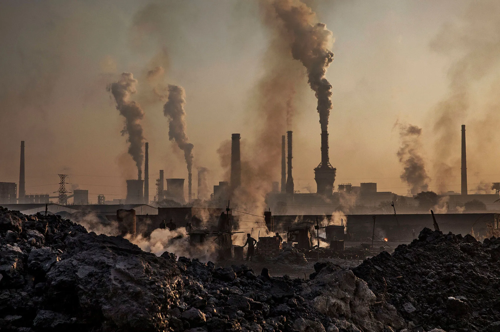
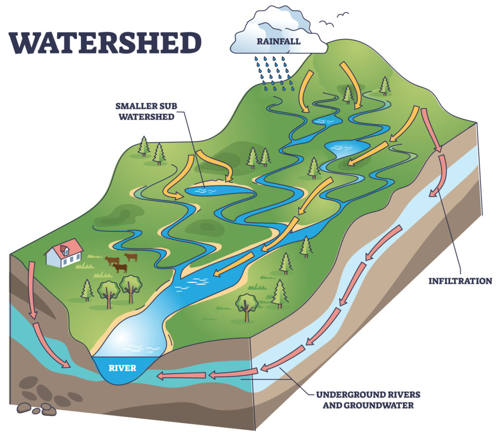
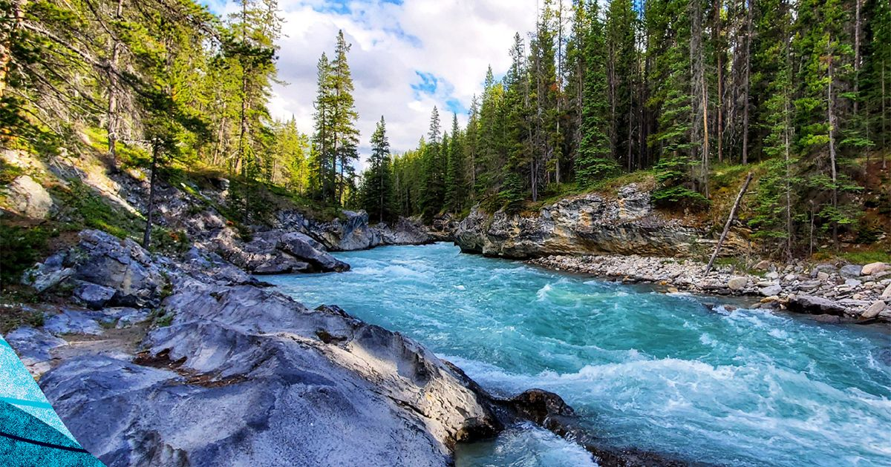
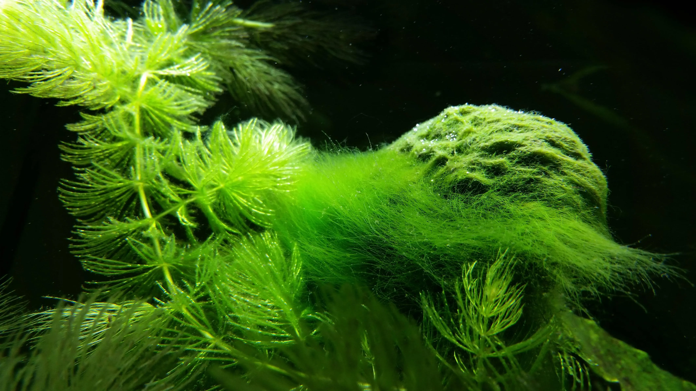
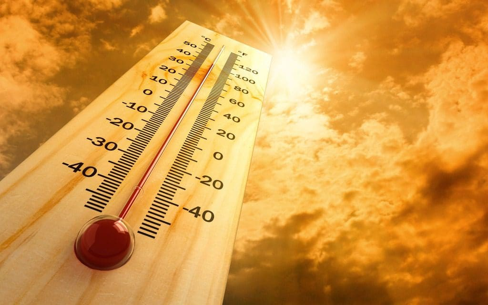
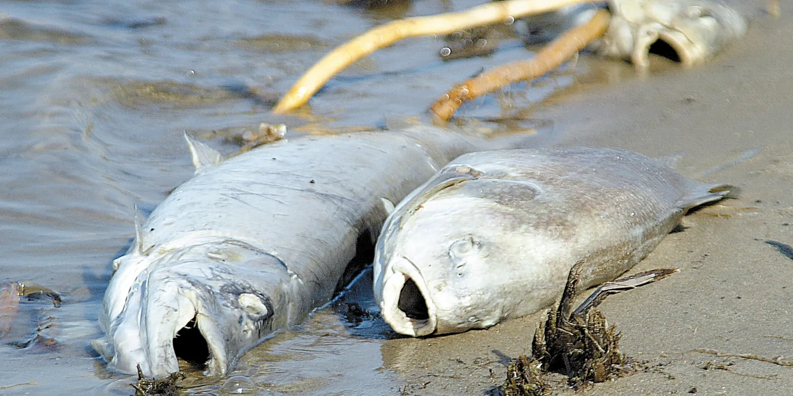
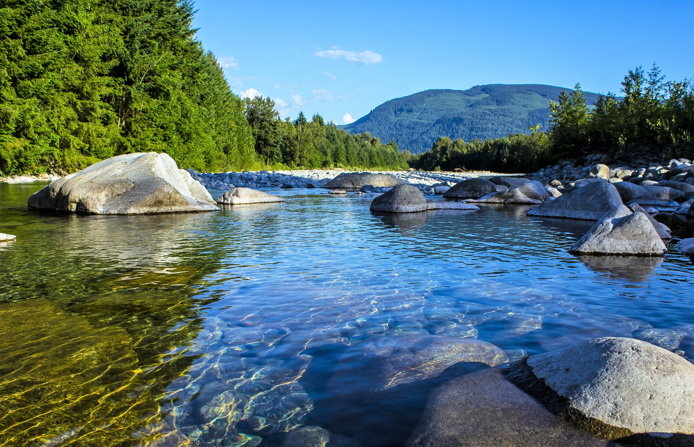

Water Pollution Systems Model
By Cristian Escobar and Ernesto Flores
Use arrow keys to navigate or click the arrow below.

By Cristian Escobar and Ernesto Flores
Use arrow keys to navigate or click the arrow below.



A watershed is the land area where rain and streams flow toward rivers and lakes. Water carries soil nutrients and pollutants as it moves across the land. Human activities such as construction farming and road building can change how water flows and increase pollution. Studying watersheds helps people understand how pollution spreads and where changes are needed to protect water quality. Healthy watersheds support plants animals and people and provide clean water for drinking recreation and irrigation over time.

Pollution moves downstream with rain surface runoff and streams until it reaches rivers and lakes. Along the way pollution mixes with sediments and affects plants and animals in the water. Understanding how pollution moves helps us predict where it will go and how it will affect wildlife and human communities. This knowledge also helps guide cleanup efforts and water management strategies so that rivers lakes and coastal areas stay healthier for people and animals that rely on them for food water and shelter.

Too many nutrients like nitrogen and phosphorus make algae grow quickly and cover the surface of rivers and lakes. When the algae die and decay oxygen in the water drops and fish and other animals can die. Eutrophication changes the balance of the ecosystem and reduces the variety of life. Controlling nutrient pollution and managing farms and cities carefully helps keep water healthy and supports animals plants and people who depend on clean water and balanced aquatic habitats.


Pollution lowers oxygen in the water kills fish and reduces the variety of plants and animals. It changes the way ecosystems work and can cause long-term damage to rivers lakes and wetlands. When species are lost food chains are affected and nature becomes less resilient to problems like climate change and invasive species. Protecting ecosystems keeps wildlife healthy and ensures that people can continue to rely on clean water fishing and other natural benefits from the environment.

Human activities release pollutants into freshwater through point sources and widespread sources. Pollution moves through watersheds and affects rivers lakes and coastal areas. It causes problems like low oxygen overgrowth of algae and chemical contamination which harms animals plants and humans. Learning how these processes work helps us manage water better reduce pollution and restore ecosystems. Clean water healthy plants and animals and functioning natural systems depend on careful management and responsible actions by people today and in the future.